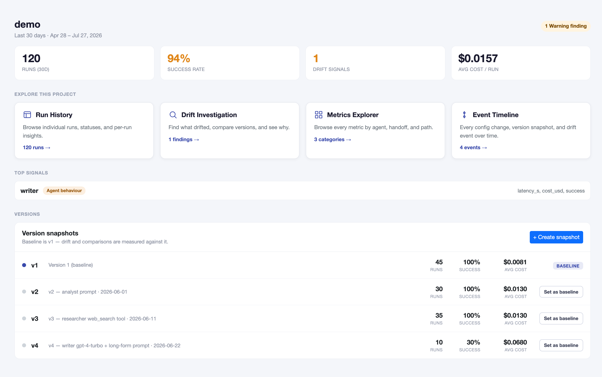
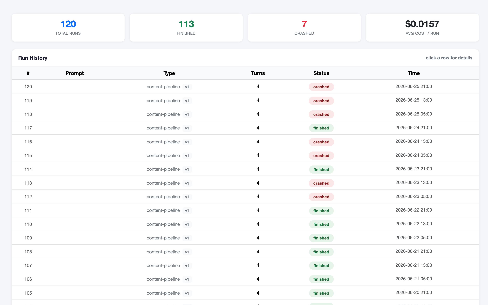
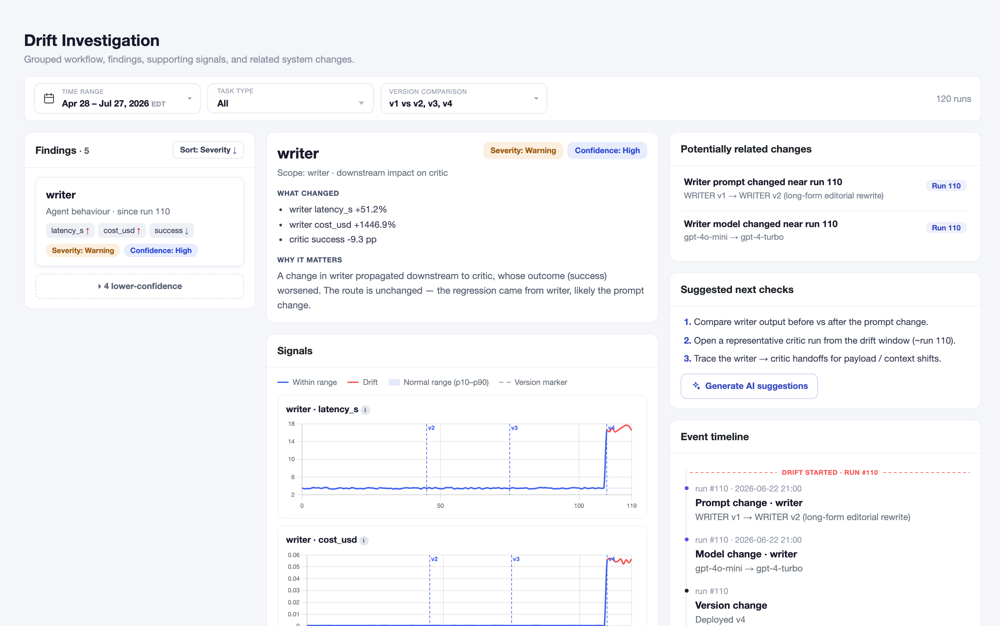
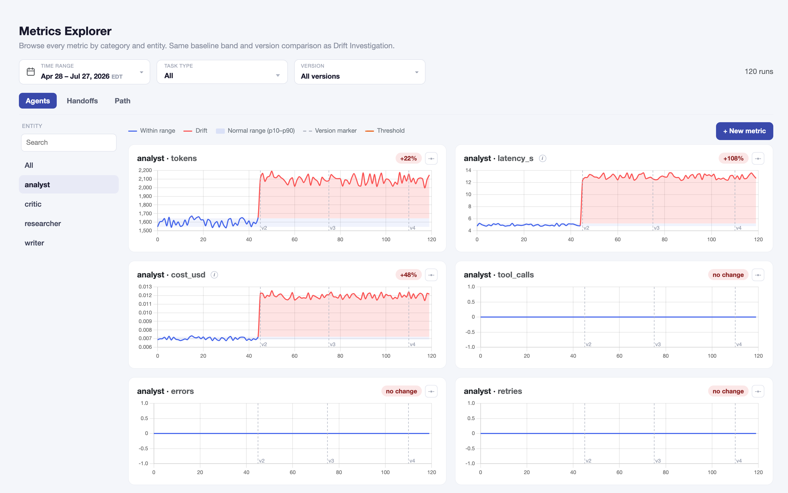

Drift investigation for multi-agent systems
Traces show what happened.
We show you where to look.
Identify which agent drifted, understand why, and know what to check next.
Open source · MIT License · Works with OpenAI, Anthropic, LangChain
01 // investigation workflow
From observability to findings.




02 // Drift investigation
From symptom to source.
The failing agent may only be the symptom. AgentPulse follows the evidence across agents, handoffs, and changes to find where the failure actually began.
The investigation plays here as it enters view…
Researcher
success98%
latency2.1s
inputstable
Analyst
success97%
latency3.4s
inputstable
Root cause
Writer
inputstable
output styledrifted
prompt + modelchanged @ run 18
payload length +180% · structure drifted
Symptom
Critic
success92% → 22%
retries×3
tokens / turn+45%
03 // OPENTELEMETRY NATIVE
Instrument once.
Track every agent.
- Works with your existing agent stack
- Captures traces locally from your first run
- Keeps instrumentation consistent across frameworks
$ git clone https://github.com/prove-ai/agentpulse # your entrypoint — before any agent imports from sdk import instrument instrument(task_type='my-system', prompt_version=1, db_name='my-system')
Works withLangChainLangGraphOpenAI SDKAnthropic SDK
04 // Claude integration
Debug agent behavior from Claude Code.
Ask what changed, trace the failure across agents, and get the next debugging steps without leaving your development workflow.
you
morning — anything break overnight?
get_todays_findingAgentPulse MCP✳
One finding, flagged around run 110 in
critic’s own config is unchanged — same prompt hash and model since v1. What did change is the payload it receives from
demo:criticsuccess rate went 92% → 22% and is still low as of the latest run. Retries are up 3×, tokens/turn +45% — it’s retrying and rambling, which usually means it can’t parse what it’s given.critic’s own config is unchanged — same prompt hash and model since v1. What did change is the payload it receives from
writer, starting at the same run. So critic is probably downstream damage, not the source.you
what changed in writer?
get_version_comparisonAgentPulse MCP✳
Two things, both at run 110: the writer prompt hash changed (
After the change, writer responses run ~180% longer and drop the section structure critic expects — earlier payloads were structured summaries, newer ones read as prose. writer’s input from analyst is unchanged (same structure, same length distribution), so this isn’t upstream noise.
270339f → a78f0f7) and the model went from gpt-4o-mini to gpt-4-turbo.After the change, writer responses run ~180% longer and drop the section structure critic expects — earlier payloads were structured summaries, newer ones read as prose. writer’s input from analyst is unchanged (same structure, same length distribution), so this isn’t upstream noise.
you
ok, what do I look at first?
get_next_check_stepsAgentPulse MCP✳
I’d go in this order:
- Diff the two writer prompts — check whether the formatting constraints got dropped in the rewrite.
- Pull two or three writer→critic handoffs from each side of run 110 and compare payload structure.
- Replay a few pre-change inputs through both writer versions — if the old one still produces structured output, that confirms the prompt/model change as the cause.
05 // Get started
Try it on a real production trace
Bring a failed run or connect AgentPulse to your stack. We'll walk through the investigation with you in 30 minutes.
Open experiment
AgentPulse is a reference implementation. We’re learning how teams investigate agent failures, what is missing, and where the workflow breaks.
Share feedback in GitHub Discussions